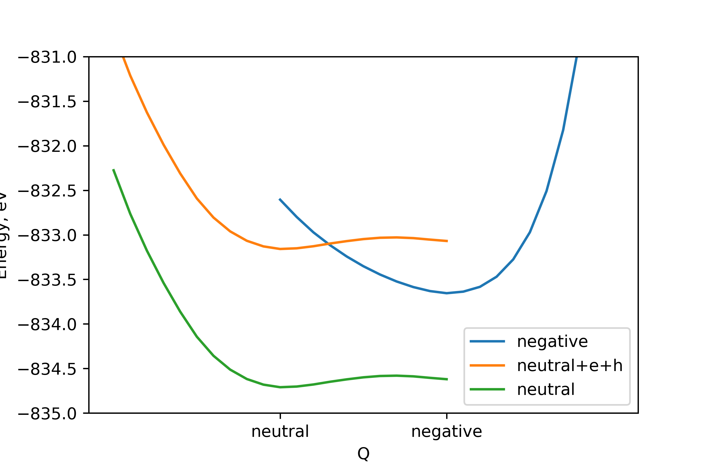
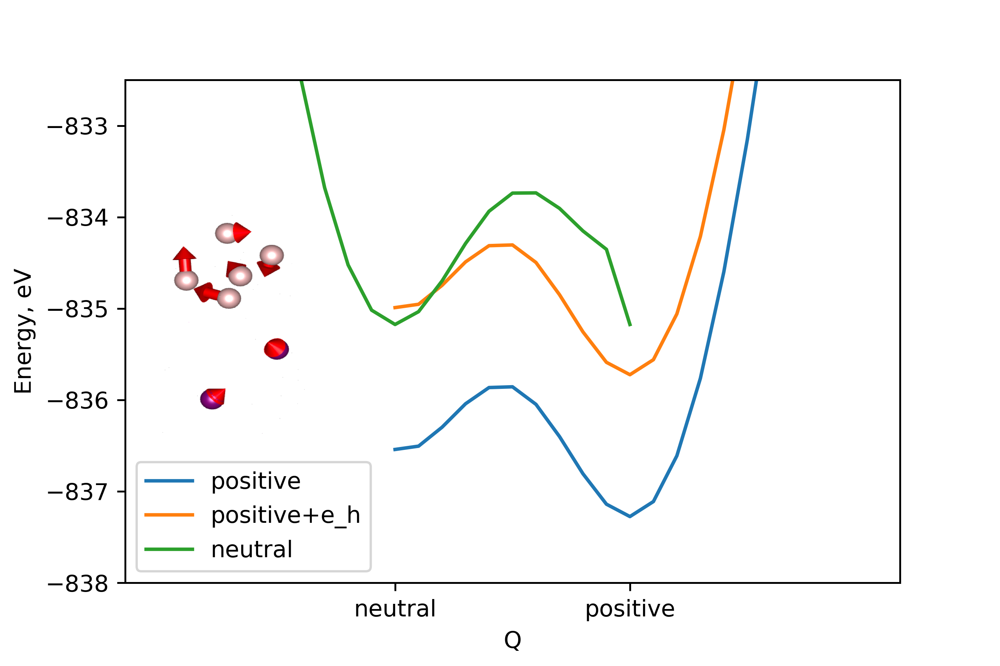
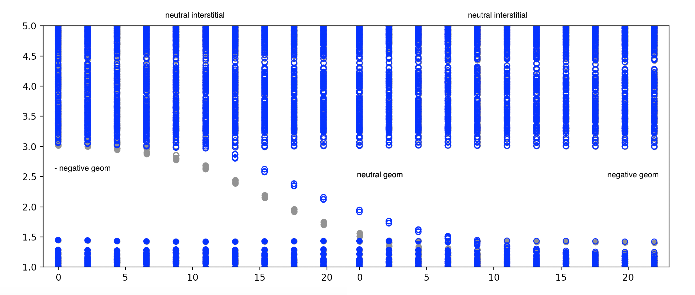
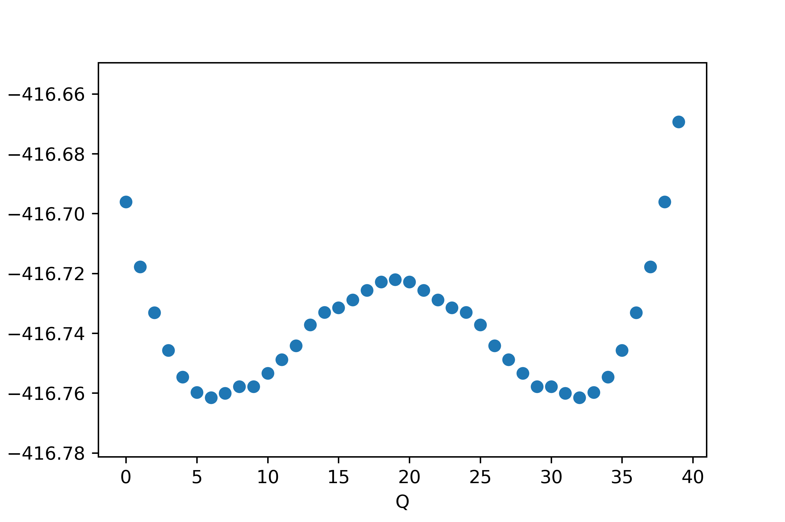

<!doctype html>
<html lang="en">
    <head>
        <meta charset="utf-8">
        <meta name="viewport" content="width=device-width, initial-scale=1.0, maximum-scale=1.0, user-scalable=no">

        <title>Slides Template</title>
        <link rel="stylesheet" href="./css/reveal.css">
        <link rel="stylesheet" href="./css/theme/white.css" id="theme">
        <link rel="stylesheet" href="./css/highlight/zenburn.css">
        <link rel="stylesheet" href="./css/print/paper.css" type="text/css" media="print">


    </head>
    <body>

        <div class="reveal">
            <div class="slides"><section  data-markdown><script type="text/template">


<section data-background="images/polkadot_side.svg">
### Group Meeting

#### Lucy Whalley

#### March 2019

</script></section><section  data-markdown><script type="text/template">

#### Hybrid halide perovskite (HHP)

<section data-background="images/polkadot_side.svg">


</script></section><section  data-markdown><script type="text/template">

#### Hybrid halide perovskite (HHP)

<section data-background="images/polkadot_side.svg">


</script></section><section  data-markdown><script type="text/template">

#### Point defects in HHP's

<section style="text-align: left;" data-background="images/polkadot_side.svg">


<small>

##### Defect Tolerance

- low temperature synthesis (cf: Czochralski process at $1500\,^{\circ}{\rm C}$)  
- experimental measurements: $10^{15}-10^{17}$cm$^{-3}$ (eg: [Heo et al.](https://doi.org/10.1002/adma.201500048))
- DFT calculations: $10^{17}-10^{20}$cm$^{-3}$ (eg: [Walsh et al.](https://doi.org/10.1002/anie.201409740)) 

vs

- long diffusions lengths ($>1\mu m$, [Stranks et al.](https://doi.org/10.1126/science.1243982))
- high efficiencies with limited defect engineering  
</br>

##### Defect mobility

- point defects associated with the halide sub lattice are mobile ([Senocrate et al.](https://doi.org/10.1002/anie.201701724))

</small>

</script></section><section  data-markdown><script type="text/template">

#### Charge transition diagram

<section data-background="images/polkadot_side.svg">


[Meggiolaro et al.](https://doi.org/10.1039/C8EE00124C)

</script></section><section  data-markdown><script type="text/template">
#### Charge transition diagram

<section data-background="images/polkadot_side.svg">


[M.-H. Du](https://doi.org/10.1021/acs.jpclett.5b00199)

</script></section><section  data-markdown><script type="text/template">

#### Configuration Coordinate Diagram

<section data-background="images/polkadot_side.svg">

(of a sort) - [Meggiolaro et al.](https://doi.org/10.1039/C8EE00124C)


</script></section><section  data-markdown><script type="text/template">

#### Configuration Coordinate Diagram

<section data-background="images/polkadot_side.svg">

(of a sort) - [Meggiolaro et al.](https://doi.org/10.1039/C8EE00124C)


</script></section><section  data-markdown><script type="text/template">

#### Perfect bulk structure

<section data-background="images/polkadot_side.svg">

<small>

- 192 atom supercell
- built from $\sqrt2\times\sqrt2\times2$ 12-atom cubic cell using transformation matrix $m_t$:
$$ 
m_t = 
\begin{bmatrix}
    2      & -2 & 0\\\
    2      & 2 & 0\\\
    0       & 0 & 2\\\
\end{bmatrix}
$$
- phonon dispersion is sensible


</small>

</script></section><section  data-markdown><script type="text/template">
#### Defect geometries

<section data-background="images/polkadot_side.svg">


</script></section><section  data-markdown><script type="text/template">

#### Displacement vectors

<section data-background="images/polkadot_side.svg">

[github.com/lucydot/vesta_vectors](https://github.com/lucydot/vesta_vectors)


<small>All atomic displacement >0.3 $\mathring A$, moving between neutral and negative charge state</small>

</script></section><section  data-markdown><script type="text/template">
#### Charge transition level diagram

<section data-background="images/polkadot_side.svg">


</script></section><section  data-markdown><script type="text/template">

#### Charge transition level diagram

<section data-background="images/polkadot_side.svg">


</script></section><section  data-markdown><script type="text/template">
<section data-background="images/polkadot_side.svg">
#### Negative Potential Energy Surface (PES) : ionic relaxation


[github.com/lucydot/scripts/vaspscripts/extract_EQ.py](https://github.com/lucydot/scripts/vaspscripts/extract_EQ.py)
</script></section><section  data-markdown><script type="text/template">

#### Negative & Neutral PES: linear interpolation

<section data-background="images/polkadot_side.svg">



At $E_F = 0.7\,\textrm{eV}$ above the VBM


</script></section><section  data-markdown><script type="text/template">

#### Positive & Neutral PES: linear interpolation

<section data-background="images/polkadot_side.svg">


At $E_F = 0.7\,\textrm{eV}$ above the VBM

</script></section><section  data-markdown><script type="text/template">

#### Positive & Neutral PES: linear interpolation
<section data-background="images/polkadot_side.svg">



At $E_F = 0.7\,\textrm{eV}$ above the VBM
</script></section><section  data-markdown><script type="text/template">

#### Calculating electron-phonon coupling 
<section data-background="images/polkadot_side.svg">

[Alkauskas et al.](https://doi.org/10.1103/PhysRevB.90.075202)  
[github.com/WMD-group/CarrierCapture.jl](https://github.com/WMD-group/CarrierCapture.jl)

</script></section><section  data-markdown><script type="text/template">

##### Electronic structure
<section data-background="images/polkadot_side.svg">


</script></section><section  data-markdown><script type="text/template">

##### Electronic structure
<section data-background="images/polkadot_side.svg">



</script></section><section  data-markdown><script type="text/template">

##### Electronic structure
<section data-background="images/polkadot_side.svg">


</script></section><section  data-markdown><script type="text/template">

##### Electronic structure
<section data-background="images/polkadot_side.svg">


</script></section><section  data-markdown><script type="text/template">

#### Next steps
<section data-background="images/polkadot_side.svg">
<small>

- Calculate the wavefunction overlap at PBEsol level of theory
- Total energies using the HSE06 functional + SoC (needed for accurate defect energy levels)
- Wavefunctions of distorted structures using the HSE06 functional + SoC
- Defect corrections using Sxdefectalign
- Perfect bulk energy from modemapping?



</small>

</script></section></div>
        </div>

        <script src="./lib/js/head.min.js"></script>
        <script src="./js/reveal.js"></script>

        <script>
            function extend() {
              var target = {};
              for (var i = 0; i < arguments.length; i++) {
                var source = arguments[i];
                for (var key in source) {
                  if (source.hasOwnProperty(key)) {
                    target[key] = source[key];
                  }
                }
              }
              return target;
            }

            // Optional libraries used to extend on reveal.js
            var deps = [
              { src: './lib/js/classList.js', condition: function() { return !document.body.classList; } },
              { src: './plugin/markdown/marked.js', condition: function() { return !!document.querySelector('[data-markdown]'); } },
              { src: './plugin/markdown/markdown.js', condition: function() { return !!document.querySelector('[data-markdown]'); } },
              { src: './plugin/highlight/highlight.js', async: true, callback: function() { hljs.initHighlightingOnLoad(); } },
              { src: './plugin/zoom-js/zoom.js', async: true },
              { src: './plugin/notes/notes.js', async: true },
              { src: './plugin/math/math.js', async: true }
            ];

            // default options to init reveal.js
            var defaultOptions = {
              controls: true,
              progress: true,
              history: true,
              center: true,
              transition: 'default', // none/fade/slide/convex/concave/zoom
              dependencies: deps
            };

            // options from URL query string
            var queryOptions = Reveal.getQueryHash() || {};

            var options = {"transition":"none"};
            options = extend(defaultOptions, options, queryOptions);
        </script>


        <script>
          Reveal.initialize(options);
        </script>
    </body>
</html>
